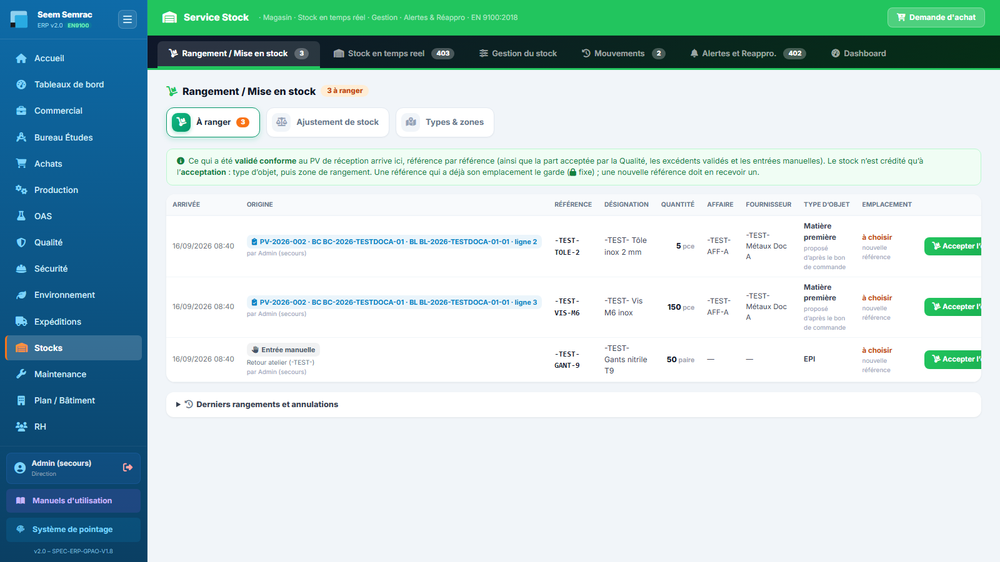
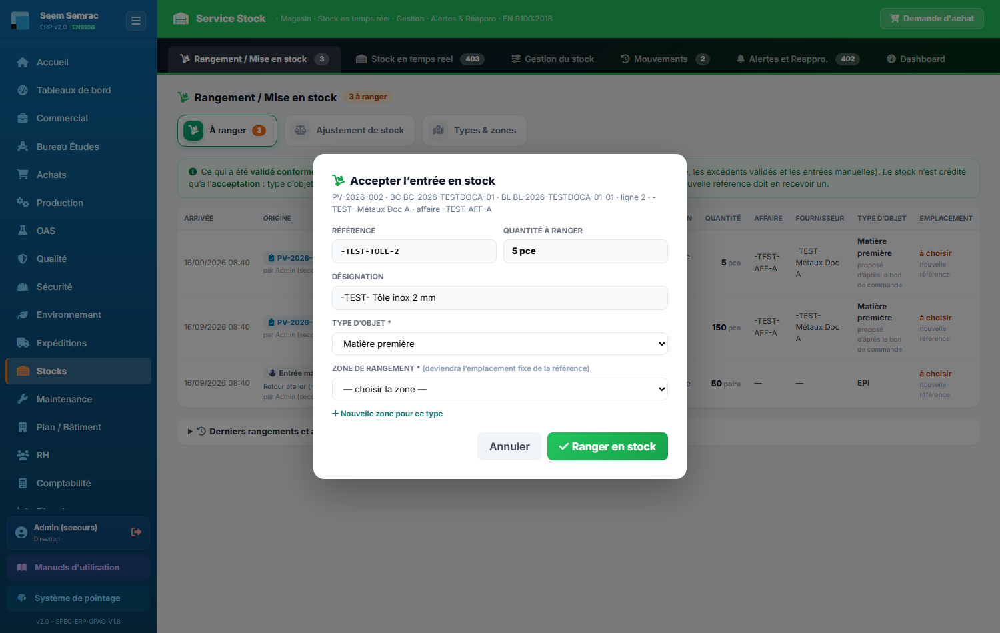
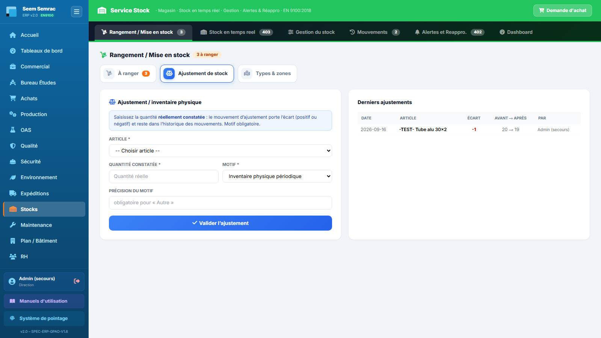
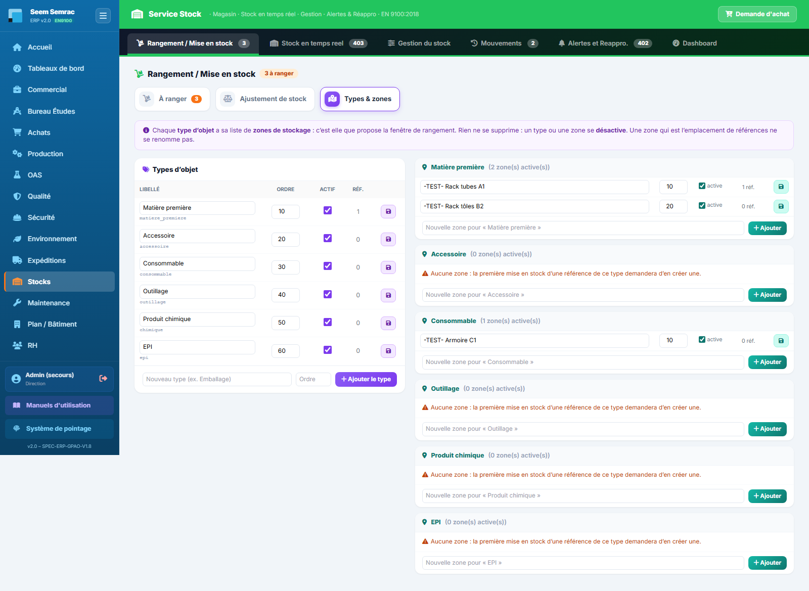
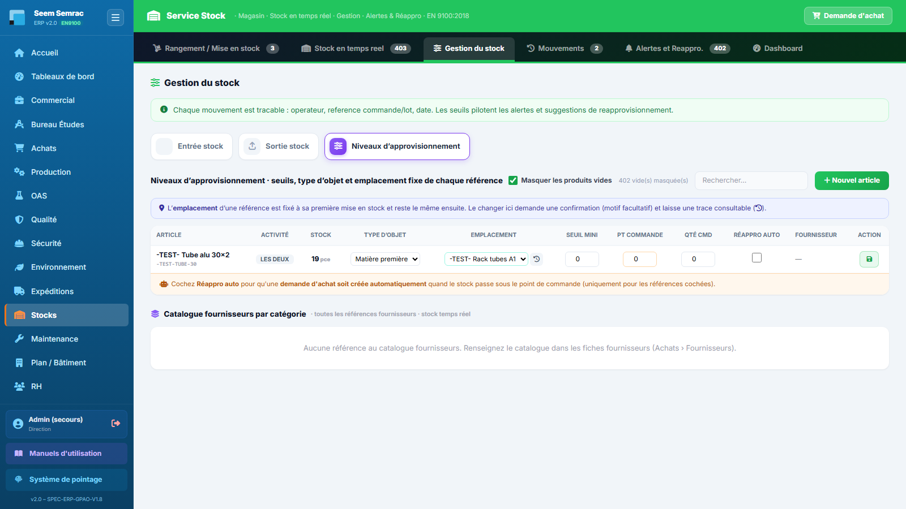

Service Stocks
Le service Stocks est le magasin de l'entreprise, en vue unifiée Seem + Semrac : rangement de ce qui arrive (ce que le PV de réception a déclaré conforme, ce que la Qualité a accepté, les excédents validés, les entrées manuelles), niveaux en temps réel, sorties et inventaires, emplacement fixe de chaque référence, journal complet des mouvements, alertes de réapprovisionnement reliées aux Achats. Vous apprendrez ici à accepter une entrée en stock et choisir sa zone, corriger un stock par inventaire, gérer les types d'objet et leurs zones, régler les seuils et déclencher une demande d'achat quand une référence descend trop bas.
Le statut d'une référence n'est jamais saisi à la main — l'ERP le calcule en comparant la quantité en stock aux seuils de l'article : CRITIQUE (au niveau du seuil mini ou en dessous), BAS (au niveau du point de commande ou en dessous), MOYEN (sous 75 % du seuil maxi) et HAUT (75 % du maxi ou plus). À l'ouverture, la page s'affiche sur l'onglet Rangement / Mise en stock ; l'onglet ouvert est gardé quand la page se recharge.
Rangement / Mise en stock
À quoi ça sert. C'est la porte d'entrée du magasin. Tout ce qui a été reçu et contrôlé attend ici, référence par référence, que le magasin le range : vous confirmez le type d'objet, vous choisissez la zone de rangement (ou vous la retrouvez verrouillée si la référence en a déjà une), et le stock est crédité. Deux sous-onglets complètent : l'ajustement de stock (inventaire) et les types d'objet et leurs zones.
Ce que vous voyez
Le titre porte une pastille orange « N à ranger » (le même nombre figure sur le bouton de l'onglet). Dessous, trois sous-onglets : À ranger (ouvert par défaut), Ajustement de stock et Types & zones.
Le tableau À ranger liste une ligne par entrée, de la plus ancienne à la plus récente :
- Arrivée — date et heure où la ligne est entrée dans la liste ;
- Origine — une pastille : PV-… · BC … · BL … · ligne n (réception contrôlée conforme), Décision Qualité (part acceptée d'un lot en quarantaine), Excédent validé (pièces reçues en trop, acceptées par la Direction) ou Entrée manuelle (avec son motif) ; en petit, qui l'a créée ;
- Référence, Désignation, Quantité et unité (avec, dessous, ce qu'il y a déjà en stock pour cette référence), Affaire, Fournisseur ;
- Type d'objet — celui que l'ERP propose (« proposé d'après le bon de commande », « d'après la catégorie en stock », « registre chimique »…), ou à choisir ;
- Emplacement — l'emplacement fixe de la référence avec un cadenas 🔒, ou à choisir (« nouvelle référence » ou « référence sans emplacement ») ;
- Action — le bouton vert « Accepter l'entrée en stock » et un petit bouton gris ⃠ pour annuler une ligne erronée.
Sous le tableau, un volet repliable « Derniers rangements et annulations » rappelle les 40 dernières lignes traitées : RANGÉE (avec la zone et qui l'a rangée) ou ANNULÉE (avec le motif).

Pas à pas — accepter l'entrée en stock
- Sur la ligne, cliquez « Accepter l'entrée en stock ». La fenêtre rappelle l'origine, le fournisseur et l'affaire.
- Vérifiez la référence et la quantité à ranger (lecture seule : la quantité est celle du contrôle). Si la ligne n'a pas de référence, saisissez celle sous laquelle ranger (la liste propose les références connues).
- Choisissez ou confirmez le type d'objet (obligatoire) : Matière première, Accessoire, Consommable, Outillage, Produit chimique, EPI… C'est lui qui détermine la liste des zones proposées.
- L'emplacement dépend de la référence :
- la référence a déjà son emplacement : il s'affiche verrouillé (cadenas) — rien à choisir, il ne change pas au rangement ;
- nouvelle référence, ou référence sans emplacement : choisissez la zone de rangement dans la liste des zones du type ; elle deviendra l'emplacement fixe de la référence. La zone qu'il vous faut n'existe pas ? Cliquez « Nouvelle zone pour ce type » et saisissez son nom (la liste se grise ; « Revenir à la liste » pour annuler) ;
- le type n'a encore aucune zone : un bandeau orange le dit et le champ « Nouvelle zone pour ce type » est obligatoire — la zone saisie rejoint la liste du type.
- Cliquez « Ranger en stock ». La notification verte confirme : référence, quantité, zone et nouveau stock ; si c'était la dernière matière attendue pour une affaire, elle ajoute « matière disponible : N BDT débloqué(s) ». La ligne passe dans « Derniers rangements ».

| Champ | Saisie | Obligatoire | Explication |
|---|---|---|---|
| Référence | Lecture (saisie si la ligne n'en a pas) | Oui | La référence de stock qui sera créditée ; une référence inconnue est créée au rangement. |
| Quantité à ranger | Lecture | — | La quantité contrôlée. Pas de conversion d'unité : une ligne fausse s'annule et se ressaisit en entrée manuelle. |
| Désignation | Lecture | — | Reprise de la ligne (bon de commande ou entrée manuelle). |
| Type d'objet | Liste des types actifs (pré-remplie) | Oui | Famille de l'objet ; fixe la liste des zones. Une référence qui a déjà un autre type le garde (il se change dans Niveaux d'approvisionnement). |
| Zone de rangement | Liste des zones du type | Oui pour une référence sans emplacement | Devient l'emplacement fixe de la référence. Verrouillée quand la référence en a déjà un. |
| Nouvelle zone pour ce type | Texte (80 caractères) | Oui si le type n'a aucune zone | Ajoute la zone à la liste du type, puis range dedans. |
Pas à pas — annuler une ligne erronée
- Cliquez le petit bouton gris ⃠ au bout de la ligne.
- Indiquez le motif (obligatoire, 3 caractères au moins) et confirmez « Annuler la ligne ».
- Rien n'est crédité ; la ligne apparaît « ANNULÉE » avec son motif. Pour la bonne quantité, faites une entrée manuelle (Gestion du stock → Entrée stock).
Sous-onglet « Ajustement de stock »
Pour recaler le stock sur la réalité (inventaire, perte, erreur). Le formulaire « Ajustement / inventaire physique » demande l'article, la quantité constatée (le comptage réel, pas l'écart), le motif (Inventaire physique périodique, Écart constaté, Perte / détérioration, Correction d'erreur de saisie, Autre) et une précision (obligatoire pour « Autre »). À droite, « Derniers ajustements » : date, article, écart (rouge si négatif), avant → après, auteur.

- Choisissez l'article (le stock actuel est rappelé entre parenthèses) et saisissez la quantité constatée.
- Choisissez le motif et, si besoin, précisez-le.
- Cliquez « Valider l'ajustement » : l'ERP demande confirmation en rappelant l'écart (« de 20 à 19, écart −1 ») puis enregistre un mouvement d'ajustement qui porte l'écart signé.
Sous-onglet « Types & zones »
À gauche, la liste des types d'objet (libellé modifiable, code technique dessous, ordre d'affichage, case Actif, nombre de références de ce type, disquette) et le champ « Nouveau type ». À droite, une carte par type avec ses zones de stockage (nom, ordre, case « active », nombre de références rangées dans la zone, disquette) et le champ « Nouvelle zone pour … ». Un type sans zone l'annonce : « la première mise en stock d'une référence de ce type demandera d'en créer une ».

- Ajouter une zone : dans la carte du type, saisissez le nom dans « Nouvelle zone pour … » puis Ajouter. Une zone qui existe déjà pour ce type n'est pas recréée.
- Ajouter un type : saisissez son libellé (et un ordre, facultatif) puis « Ajouter le type ».
- Modifier un libellé, un ordre ou la case Actif / active, puis la disquette de la ligne.
Règles & points d'attention
- Qui range : les personnes qui ont l'écriture sur le Stock (Direction, Achats, Logistique, ou case « Écrire » cochée sur la fiche). Pour les autres, les boutons sont grisés. Le contrôleur du PV, la Qualité et la Direction alimentent la liste sans avoir ce droit.
- Matière disponible pour la Production : les bons de travail d'une affaire ne passent « matière OK » que lorsque toute la matière de ses bons de commande est contrôlée et rangée (et qu'aucune quantité n'est repartie sans remplacement). Ranger au fil de l'eau évite de bloquer l'atelier.
- Rien ne se supprime : une ligne à ranger s'annule avec un motif ; un type ou une zone se désactive (il n'est plus proposé, les références qui le portent le gardent).
- Une zone qui est déjà l'emplacement de références ne se renomme pas : créez la nouvelle zone, déplacez les références (Niveaux d'approvisionnement), puis désactivez l'ancienne.
- Le type proposé n'est qu'une suggestion (type de la référence, catégorie en stock, catégorie du bon de commande, catalogue fournisseur, registre chimique, catalogue EPI, nomenclature) : vérifiez-le avant de ranger.
- Une même ligne ne se range qu'une fois : deux personnes qui cliquent en même temps — une seule passe, l'autre est invitée à recharger.
Stock en temps réel
À quoi ça sert. C'est la photographie instantanée du magasin : chaque référence avec sa jauge de niveau, son emplacement, son statut, sa couverture en jours et son fournisseur. Un coup d'œil aux compteurs de statut suffit pour savoir si la journée commence par des réapprovisionnements urgents.
Ce que vous voyez
En haut, le titre avec le nombre de références et le bouton vert « Ajouter article » — il ouvre Gestion du stock → Entrée stock : une nouvelle référence entre par la liste « À ranger ». Dessous, cinq compteurs cliquables qui filtrent le tableau par statut : CRITIQUE, BAS, MOYEN, HAUT et TOUT. La barre de filtres propose l'activité (Tout / Seem / Semrac / Les deux), la catégorie (seules les catégories présentes s'affichent), la case « Masquer les produits vides » et le champ « Rechercher article, ref… ». Une légende rappelle le code couleur des jauges.
Le tableau liste chaque article avec les colonnes Article / Réf (et, dessous, l'emplacement 📍 quand il est connu), Activité, Catégorie, Niveau de stock (jauge avec la quantité, le seuil mini et le point de commande), Couverture (jours de stock restant — rouge sous 7 jours, orange sous 14 ; « N/A » sans consommation mensuelle), Rotation (sorties annualisées ÷ stock moyen), Fournisseur, Statut et Actions. Les lignes critiques sont teintées de rouge pâle.
Dans Actions : la flèche verte ouvre le formulaire Entrée stock pré-rempli avec la référence, la flèche rouge le formulaire Sortie stock avec l'article choisi ; sur les références CRITIQUE ou BAS, le bouton panier « Créer DA » crée une demande d'achat.

Pas à pas — retrouver et filtrer une référence
- Tapez un mot du nom ou de la référence dans « Rechercher article, ref… » : le tableau se filtre au fil de la frappe.
- Combinez avec les filtres activité et catégorie, ou cliquez sur un compteur de statut. Les filtres se cumulent ; TOUT réaffiche tout.
- Vous cherchez une référence à zéro ? Décochez « Masquer les produits vides ».
- Sur la ligne trouvée, lisez la jauge et l'emplacement sous la référence.
Règles & points d'attention
- « Masquer les produits vides » est cochée par défaut et mémorisée sur ce poste ; elle vaut aussi pour Niveaux d'approvisionnement. Un tableau presque vide n'est donc pas une panne : lisez le compteur « N référence(s) vide(s) masquée(s) ».
- Un article « Les deux » reste visible que l'on filtre sur Seem ou sur Semrac.
- La couverture = stock ÷ consommation mensuelle × 30 jours ; la rotation se calcule depuis les mouvements (tiret = pas assez de sorties).
- Le stock affiché est le stock rangé : ce qui attend dans « À ranger » n'y figure pas encore.
Gestion du stock
À quoi ça sert. Les saisies du magasin hors réception fournisseur — une entrée manuelle (retour atelier, régularisation, livraison sans bon de commande), une sortie réelle — et le paramétrage de chaque référence : seuils, réappro automatique, type d'objet et emplacement fixe. Chaque écriture est tracée dans les Mouvements.
Ce que vous voyez
Un bandeau vert rappelle la règle de traçabilité, puis trois sous-onglets : Entrée stock, Sortie stock et Niveaux d'approvisionnement. L'ajustement d'inventaire est dans l'onglet Rangement / Mise en stock.

Sous-onglet « Entrée stock » — entrée manuelle
Un bandeau vert le rappelle : l'entrée ne crédite pas le stock tout de suite, elle rejoint la liste Rangement › À ranger, où le type d'objet et l'emplacement sont confirmés. Le formulaire demande la référence (existante ou nouvelle — la liste propose les références connues ; pour une référence connue, la désignation, l'unité et le type se remplissent), la désignation, la quantité, l'unité, le type d'objet (ou « à choisir au rangement »), l'affaire (facultative) et le motif (obligatoire). Bouton « Ajouter à la liste « À ranger » ». À droite, « Dernières entrées ».
Sous-onglet « Sortie stock »
Pour sortir réellement de la matière ou des consommables. Le formulaire demande l'article (les articles sans stock sont grisés), la quantité sortie, le motif (Consommation production, Rebut / casse, Retour fournisseur, Transfert inter-atelier, Autre), une précision (obligatoire pour « Autre »), le BDT et l'affaire (facultatifs). Bouton « Valider la sortie », après confirmation. À droite, « Dernières sorties ».
Sous-onglet « Niveaux d'approvisionnement »
Le paramétrage de chaque référence. En tête, la case « Masquer les produits vides », un champ Rechercher et le bouton « Nouvel article » (qui ouvre l'entrée manuelle). Un bandeau bleu rappelle que l'emplacement est fixé à la première mise en stock. Le tableau montre, par référence : Article, Activité, Stock, Type d'objet (liste), Emplacement (liste des zones du type, avec un bouton historique 🕘), Seuil mini, Pt commande, Qté cmd, Réappro auto, Fournisseur et la disquette qui enregistre les seuils. En dessous, le catalogue fournisseurs par catégorie (références déclarées dans les fiches fournisseurs, avec le stock réel ou « non stocké »).

Pas à pas — faire une entrée manuelle
- Ouvrez Gestion du stock → Entrée stock (ou la flèche verte d'une ligne du Stock en temps réel).
- Saisissez la référence, la quantité et le motif (« Retour atelier », « Régularisation »…) ; complétez désignation, unité, type d'objet et affaire si besoin.
- Cliquez « Ajouter à la liste « À ranger » » : la page s'ouvre sur l'onglet Rangement ; acceptez la ligne pour créditer le stock.
Pas à pas — sortir du stock
- Ouvrez Gestion du stock → Sortie stock (ou la flèche rouge d'une ligne).
- Choisissez l'article, la quantité et le motif. Si la sortie sert un bon de travail, indiquez le BDT : l'ERP retrouve son lot et son affaire et impute la consommation au coût matière réel.
- Cliquez « Valider la sortie » et confirmez. La notification donne le stock avant → après (et le lot imputé).
Pas à pas — régler les seuils et le réappro automatique
- Ouvrez Gestion du stock → Niveaux d'approvisionnement et retrouvez la référence (Rechercher ; décochez « Masquer les produits vides » si elle est à zéro).
- Ajustez Seuil mini, Pt commande et Qté cmd ; cochez Réappro auto pour qu'une DA se crée seule sous le point de commande.
- Cliquez la disquette de la ligne : « Seuils enregistrés ».
Pas à pas — changer le type ou l'emplacement fixe d'une référence
- Dans Niveaux d'approvisionnement, choisissez le nouveau type d'objet dans la colonne Type : il s'enregistre aussitôt et la liste des zones se met à jour (un type ne peut pas être vidé).
- Choisissez la nouvelle zone dans la colonne Emplacement (« — aucun — » pour retirer l'emplacement). L'ERP demande confirmation (« Déplacer … de … vers … ») avec un motif facultatif.
- Confirmez « Déplacer » : « Emplacement modifié et historisé ».
- Le bouton 🕘 ouvre l'historique des emplacements de la référence : date, avant, après, motif, auteur (dont la première mise en stock).
Règles & points d'attention
- Gardez l'ordre seuil mini < point de commande < seuil maxi.
- Une sortie est refusée au-delà du stock disponible ; un BDT ou une affaire inconnus sont refusés (rien n'est sorti). Une sortie notée pour une affaire sans BDT n'est pas valorisée dans le coût matière (message orange).
- Un emplacement saisi avant le lot du 15/09/2026 (ex. A1-01) apparaît « (hors liste) » tant qu'aucune zone de ce nom n'existe pour le type : il reste l'emplacement de la référence.
- Le tableau des seuils s'enregistre ligne par ligne (disquette).
- Si le catalogue fournisseurs est vide, renseignez les catalogues dans Achats → Fournisseurs / ST.
Mouvements
À quoi ça sert. C'est le journal de bord complet du magasin : chaque entrée, sortie ou ajustement y est consigné avec son origine, son opérateur et sa date. C'est l'onglet de la traçabilité : en cas de doute sur un niveau de stock, d'audit ou de recherche d'une consommation, c'est ici que l'on remonte le fil.
Ce que vous voyez
En haut, le titre avec le nombre de mouvements et un champ « Rechercher (article, source, opérateur…) ». Le tableau, du plus récent au plus ancien, comprend Date, Article, Type (↓ Entrée, ↑ Sortie, ± Ajustement), Qté (l'écart signé pour un ajustement), Avant→Après, Origine, Opérateur et Motif.
L'étiquette Origine dit d'où vient le mouvement : Mise en stock · BC … (entrée acceptée dans l'onglet Rangement), Ajustement d'inventaire, BDT … (production), Réception BC … (entrée faite directement au PV, avant le 15/09/2026), Réception DA, BL, Lot, Commande, Conso. machine, ou « Sortie / saisie libre ».

Pas à pas — retracer l'historique d'un article
- Tapez le nom de l'article (ou un n° de BDT, un opérateur, un motif) dans le champ de recherche.
- Lisez la colonne Avant→Après de haut en bas : vous suivez l'évolution exacte du niveau de stock.
- L'étiquette Origine vous dit qui a approvisionné ou consommé.
Règles & points d'attention
- Ce journal est en lecture seule : les mouvements naissent du rangement, des sorties, des ajustements et de la production, jamais ici.
- Une ligne rangée n'a qu'un mouvement d'entrée : la base refuse un second crédit pour la même ligne.
- L'onglet affiche les 200 derniers mouvements.
Alertes et Réappro.
À quoi ça sert. C'est la liste de courses du magasin : tous les articles passés sous leurs seuils y sont rassemblés, classés par gravité, avec la quantité à commander déjà proposée. De là, un clic crée la demande d'achat qui part chez les Achats.
Ce que vous voyez
En haut, le titre avec une pastille rouge « N articles à commander » et le bouton vert « Nouvelle DA ». Quatre tuiles : Articles critiques, Articles bas, Valeur à commander (quantités à commander × prix unitaires) et Livraison urgente (≤3j). Suivent les tableaux Stock CRITIQUE et Stock BAS : Article, Activité, Stock actuel, Seuil mini, Écart, Couverture, Fournisseur (avec son délai), Qté à commander (avec le montant estimé) et le bouton « Créer DA ». Sans alerte : « Tous les stocks sont corrects ».

Pas à pas — créer une DA depuis une alerte (le cas courant)
- Sur la ligne de l'article en alerte, cliquez « Créer DA ».
- L'ERP crée la demande, pré-remplie : article (nom + référence), quantité à commander, fournisseur préféré, priorité urgent, demandeur « Stock ».
- La notification confirme le numéro ; la demande apparaît dans Achats → Demandes d'achat.
- À la livraison, la réception et le PV de contrôle (Expéditions) mettent la marchandise dans Rangement → À ranger ; une fois rangée, l'article repasse au-dessus de ses seuils.
Pas à pas — créer une DA manuelle (hors alerte)
- Cliquez « Nouvelle DA » : la fenêtre « Nouvelle demande d'achat » s'ouvre.
- Saisissez la désignation (seul champ obligatoire), le type, la priorité, la quantité, le fournisseur, la date souhaitée et l'éventuel numéro d'affaire.
- Cliquez « Créer la DA » : la demande part chez les Achats (« à traiter »).

| Champ | Saisie | Obligatoire | Explication |
|---|---|---|---|
| Article / Désignation | Texte (ex : Barres alu 2024-T3 Ø30) | Oui | Ce qu'il faut acheter ; sans désignation, l'ERP refuse la création. |
| Type | Liste : Matière / Outillage / Consommable / Chimique / Sous-traitance | Non | Famille d'achat ; aide les Achats à router la demande. |
| Quantité | Texte libre (ex : 12 barres) | Non | Quantité souhaitée, avec son unité en clair. |
| Fournisseur | Texte | Non | Fournisseur pressenti ; l'acheteur reste libre de le changer. |
| Priorité | Liste : Normal / Urgent / Critique | Non | Niveau d'urgence affiché côté Achats. |
| Livraison souhaitée | Date | Non | Date à laquelle vous avez besoin de la marchandise. |
| N° affaire (option) | Texte (AFF-2026-XXX) | Non | Rattache l'achat à une affaire cliente pour le suivi des coûts. |
Règles & points d'attention
- La quantité à commander proposée est la quantité de commande paramétrée sur l'article ; à défaut, environ 80 % de l'écart entre le stock et le seuil maxi.
- Le réappro automatique (case « Réappro auto » dans Niveaux d'approvisionnement) compte ce qui attend dans « À ranger » : une matière reçue mais pas encore rangée n'est pas recommandée. Si la liste « À ranger » est illisible (panne), le réappro automatique ne tourne pas à cet affichage.
- Les tableaux d'alertes, eux, montrent le stock rangé : une référence dont la livraison attend son rangement peut y figurer — rangez-la plutôt que de recommander.
- Créer la DA ne commande rien : c'est l'acheteur qui la transforme en bon de commande.
Dashboard
À quoi ça sert. C'est la vue de pilotage du magasin : combien d'argent dort en stock, dans quelles catégories, quelle est la santé globale des niveaux et quels articles concentrent la valeur (analyse ABC).
Ce que vous voyez
Quatre tuiles : Valeur totale du stock, Articles critiques, Couverture moyenne et Mouvements ce mois. Dessous, Valeur par catégorie et État du stock global (objectif : 0 critique, moins de 10 % bas). Enfin, « Analyse ABC — Top articles par valeur de stock » : classe A (70 % de la valeur), B (20 %), C (10 %).

Pas à pas — la revue hebdomadaire du magasin
- Vérifiez que la liste À ranger est à jour, puis la tuile Articles critiques.
- Comparez l'état du stock global à l'objectif.
- Parcourez l'analyse ABC : concentrez la surveillance sur la classe A.
- Un œil à la couverture moyenne et aux mouvements du mois confirme le rythme général.
Règles & points d'attention
- Tous les chiffres sont recalculés à l'affichage à partir du stock rangé et des mouvements réels.
- La valeur du stock dépend des prix unitaires renseignés : un article sans prix compte pour zéro.